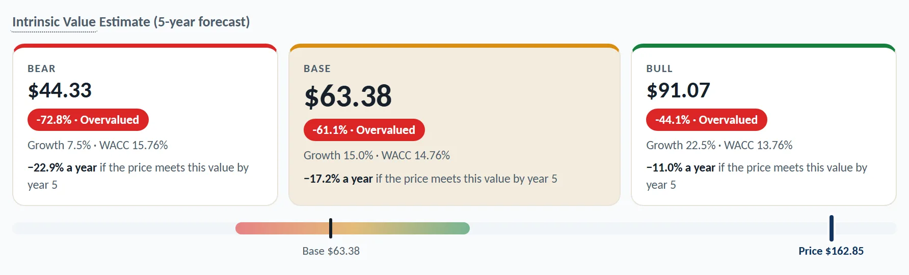
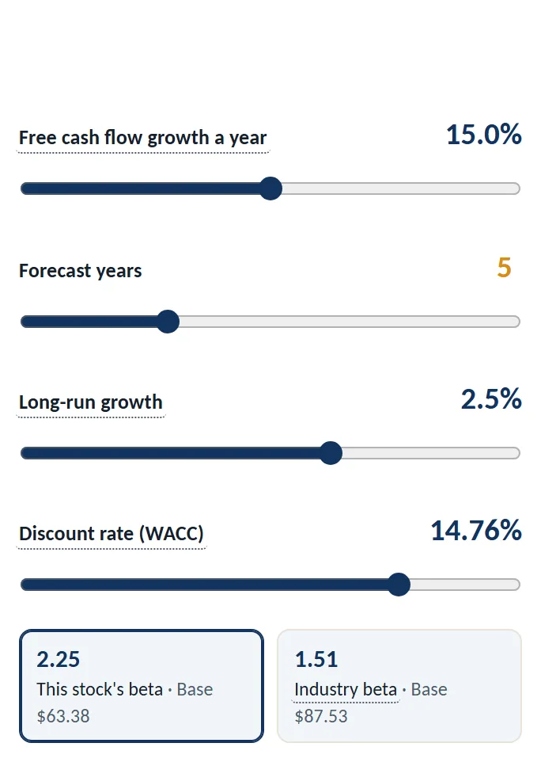
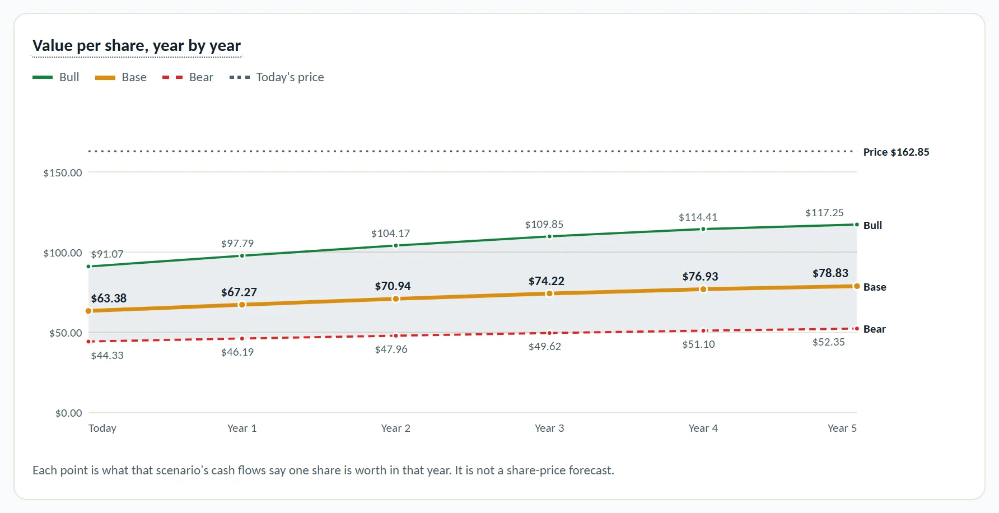
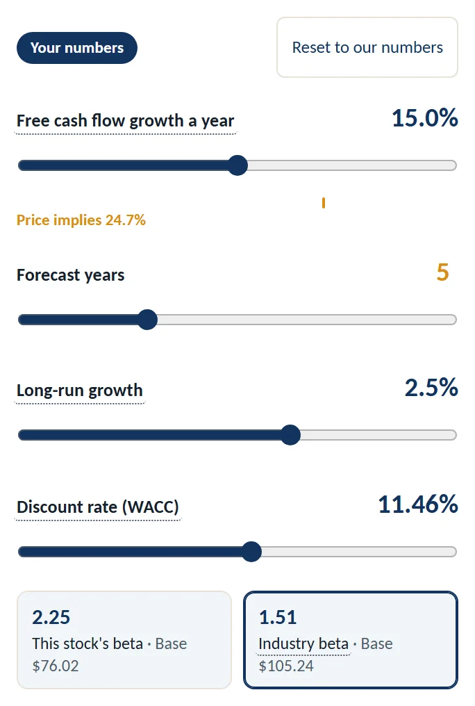
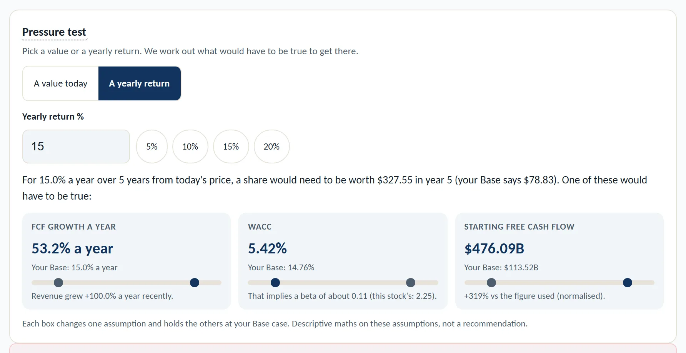

What Would Nvidia Need to Return 15% a Year? We Pressure-Tested the Numbers
A note on authorship: The research, analysis, and opinions in this article are the author's own. Claude (Anthropic's AI) assisted with drafting and editing the prose.
Numbers as at the close on 13 November 2026. Nvidia reports its third-quarter results on 17 November (US time). We'll update every figure and screenshot in this article once they're out.
A year ago, one Nvidia share cost $186.86. At the close on 13 November it was $162.85: down 12.9% on the year, and 31.9% below its peak of $239.24 on 6 October. Most of that fall came in the last two weeks: from $204.64 on 30 October to $162.85, including a 9.3% drop on 5 November alone.
Then, on 11 November, Nvidia's board accepted the resignation of Jensen Huang, the company's co-founder and chief executive for 33 years, effective immediately. Chief financial officer Colette Kress is interim CEO, and the board has said it is still choosing a search firm to find a permanent replacement. In the two trading days after the announcement (12 and 13 November), the share price fell another 6.3%.
That's a lot of uncertainty. We won't guess what happens next at Nvidia. Instead, we'll ask a narrower question that numbers can answer:
If you bought at $162.85, what would Nvidia have to deliver for you to earn 15% a year?
We'll answer it with our free DCF Valuation tool, which we rebuilt this month. Along the way you'll see what each new part of the page does.
What's in this article:
- Our Base value for Nvidia, and the assumptions behind it
- The value-by-year chart: what a share is worth each year, not just today
- The beta switch: why the discount rate is where risk shows up
- The Pressure test: what has to be true for a 15% yearly return
- Making sense of the answer: set against what Nvidia has actually done
Step 1: Where our numbers start
A discounted cash flow (DCF) valuation adds up all the cash a business will produce in future, with each year's cash shrunk back to what it's worth today. (New to this? Our beginner's guide to DCF builds one from scratch with a coffee shop.) Type NVDA into the page and it gives three answers:

Our Base case puts one share at $63.38, well under the $162.85 price. Where does that come from?
- Starting cash: $113.5 billion a year. Chip makers' profits swing with the industry's cycle, so we don't start from one year's free cash flow. We take Nvidia's average free cash flow margin over its last four financial years (about 37.5 cents per dollar of sales) and apply it to its last 12 months of revenue ($303 billion). For comparison, its actual free cash flow over the last four reported quarters was about $127 billion.
- Growth: 15% a year for five years, then 2.5% a year after that, forever.
- Discount rate: 14.76%. This is the yearly return an investor would want for the risk of owning the shares. It's high because Nvidia's share price has swung far more than the market's: its beta is 2.25, meaning it has typically moved about 2¼ times as much as the market.
Every one of these is now a slider on the left of the page, so you can drag any of them and watch the value move:

Step 2: What a share is worth, year by year
The old page showed one number for today. The new one draws a line for each case, showing what the cash flows say a share is worth at the start and at the end of each of the five years:

Why does the value rise over time? Each year the business gets a year closer to its future cash and grows a little bigger, while it pays out what it earns along the way. On our Base case, a share is worth $78.83 by year 5. Today's price, the dotted line, sits above all three lines for the whole five years.
This chart is the key to our question. To earn 15% a year, a share bought at $162.85 has to be worth $327.55 in five years ($162.85 × 1.15 × 1.15 × 1.15 × 1.15 × 1.15). Our Base line ends at $78.83, so something big has to be different from our Base. The Pressure test finds out what.
Step 3: Where uncertainty shows up: the discount rate
A DCF has no input called "who's the CEO" or "how worried is the market". Uncertainty can only enter through the numbers: slower growth, lower margins, or a higher discount rate, the return investors demand for taking the risk.
The new page lets you choose where that discount rate comes from. "This stock's beta" uses how much Nvidia's own share price has swung. "Industry beta" uses the average for semiconductor companies (from New York University professor Aswath Damodaran's published industry data, adjusted for Nvidia's own debt), which smooths out one company's unusual history:

| This stock's beta | Industry beta | |
|---|---|---|
| Beta | 2.25 | 1.51 |
| Discount rate | 14.76% | 11.54% |
| Base value today | $63.38 | $87.53 |
| Growth today's price implies (5 years) | 42.7% a year | 32.1% a year |
Same company, same cash, same growth: switching the beta moves the value by almost 40%. That's how much the discount rate matters, and why "how risky is Nvidia now?" is a numbers question, not just a headline. The last row is what today's price already assumes: free cash flow growing about 43% a year for five years on Nvidia's own beta, or 32% on the industry's. (The page marks this as "Price implies" under the growth slider when it fits on the slider.)
Step 4: The Pressure test: what would 15% a year take?
The Pressure test runs the valuation backwards. Pick "A yearly return", type 15, and it works out what would have to be true for a share bought today to be worth $327.55 in year 5:

Each box changes one assumption and keeps the rest at our Base case. Any one of these would do it:
| For 15% a year, you'd need… | Our Base | Stock beta | Industry beta |
|---|---|---|---|
| Free cash flow growth, each year for 5 years | 15% | 53.2% | 44.1% |
| …or a discount rate of | 14.76% / 11.54% | 5.42% | 5.42% |
| …or starting free cash flow of | $113.5B | $476B | $351B |
Step 5: Do those numbers make sense?
The Pressure test doesn't say which answer is right. It hands you three claims to check. Let's check them against what Nvidia has actually done.
The discount rate route: 5.42%. That's roughly what a very safe, slow-moving business would carry. The page translates it into a beta of about 0.11, as if Nvidia's share price barely moved with the market at all. A stock that has just fallen 20% in two weeks, with no permanent CEO, is hard to call that safe. This route doesn't stand up.
The starting cash route: $351–476 billion a year, today. Nvidia's actual free cash flow over the last four reported quarters was about $127 billion. This route needs three to four times that, right now, before any growth. That doesn't stand up either.
The growth route: 44–53% a year for five years. This is the only one with a real argument, because Nvidia has grown faster than this before:
| Financial year (ends late January) | Free cash flow |
|---|---|
| 2023 | $3.8B |
| 2024 | $27.0B |
| 2025 | $60.9B |
| 2026 | $96.7B |
| Last 4 reported quarters (to July 2026) | about $127B |
Free cash flow = cash from operations minus capital expenditure, from Nvidia's reported financial statements via KashVector's data service.
From 2023 to 2026, free cash flow grew about 194% a year. But the pace has been slowing as the numbers got bigger: +126% in 2025, +59% in 2026. And it isn't a straight line: free cash flow was $48.6 billion in the April 2026 quarter and $21.4 billion in the July quarter.
Now look at what 53% a year for five years means in dollars. Starting from our $113.5 billion, it multiplies free cash flow by about 8.4 times, to roughly $958 billion a year by year 5. On the industry beta, 44% a year gets to about $705 billion. Even the growth today's price already assumes, about 43% a year on Nvidia's own beta, takes it to around $670 billion. Those are amounts of spare cash that no company has ever produced in a year.
So, in numbers only: a 15% yearly return from $162.85 needs Nvidia to keep growing its cash at roughly the pace of the last year for five more years, from a base that is already one of the largest in the world. It isn't impossible. It is the whole bet, and the Pressure test shows exactly how big that bet is.
Try a different question
Fifteen percent is a demanding target. The Pressure test takes any return: tap the 5% or 10% chip and see what a more modest result would need. Or switch to "A value today" and type a price you'd consider fair. Or skip the Pressure test and just drag the growth slider to the number you believe, and read off the value. If you change something, "Reset to our numbers" puts it back.
Try it yourself Open Nvidia in the DCF Valuation tool and run your own Pressure testYou can also see how Nvidia compares with its closest rival on our side-by-side view of Nvidia and Broadcom, one of the most-compared pairs on our site.